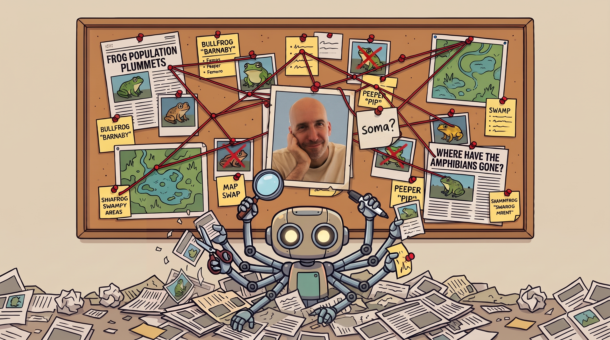

The Pond · Pondcast #13
Frisket: an AI-powered spreadsheet for investigations
With Jonathan Soma
Frisket is an open-source, AI-powered spreadsheet for investigative reporting. Throw in a disorganized mountain of PDFs, transcripts, audio, video, emails or spreadsheets, then use AI to search, sort, classify, and cross-reference your way through the mess! Instead of bouncing between Pinpoint, NotebookLM, pandas, and a half-dozen other tools, Frisket brings everything together into one (painfully complicated?) interface.
The Pond is a community by and for nerds in the newsroom. Come say hello 🐸